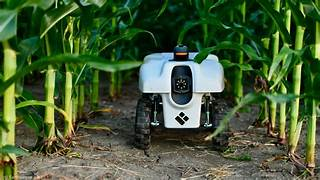
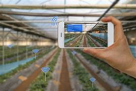
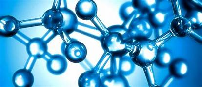
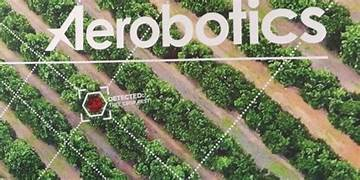

Tecnologia no Campo
A tecnologia tem desempenhado um papel cada vez mais importante no campo, ajudando a melhorar a eficiência e produtividade da agricultura e do agronegócio como um todo. Alguns exemplos de tecnologias usadas no campo incluem:
- Exemplos de tecnologias
- Agricultura de precisão: essa tecnologia envolve o uso de sistemas de GPS, sensores, drones e outras ferramentas para monitorar e gerenciar a produção agrícola em tempo real. Com essas ferramentas, os agricultores podem ajustar a quantidade de fertilizantes, água e outros insumos usados em cada área da lavoura, aumentando a eficiência e reduzindo custos.
- Robótica agrícola: robôs e drones estão sendo cada vez mais usados na agricultura, ajudando a automatizar tarefas como o plantio, irrigação e colheita de culturas. Esses robôs podem ser programados para trabalhar de forma autônoma, permitindo que os agricultores economizem tempo e aumentem a produtividade. 
- Internet das Coisas (IoT): essa tecnologia envolve o uso de sensores para coletar dados sobre as condições ambientais e do solo em tempo real. Com esses dados, os agricultores podem ajustar seus métodos de produção para maximizar a eficiência e qualidade da produção. 
- Biologia molecular: a biologia molecular é uma tecnologia usada para desenvolver novas variedades de plantas e melhorar a resistência a doenças e pragas. Com a biologia molecular, os cientistas podem identificar genes específicos em uma planta e, em seguida, modificar esses genes para produzir plantas mais resistentes e produtivas. 
- Inteligência Artificial (IA): a IA pode ser usada para ajudar a prever as condições climáticas e ambientais, bem como para monitorar a produção agrícola em tempo real. Com essas informações, os agricultores podem fazer ajustes em seus métodos de produção para maximizar a eficiência e a produtividade. 